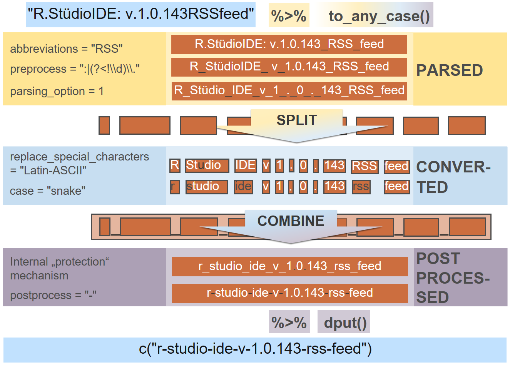

Overview
The snakecase package introduces a fresh and straightforward approach on case conversion, based upon a consistent design philosophy.
For a short intro regarding typical use cases, see the blog article Introducing the snakecase package.
Basic usage
The workhorse function of this package, to_any_case(), converts by default into snake case:
string <- c("lowerCamelCase", "ALL_CAPS", "IDontKNOWWhat_thisCASE_is")
to_any_case(string)
## [1] "lower_camel_case" "all_caps"
## [3] "i_dont_know_what_this_case_is"One can choose between many other cases like "lower_camel", "upper_camel", "all_caps", "lower_upper", "upper_lower" and "mixed", which are based on "parsed" case:
to_any_case(string, case = "parsed")
## [1] "lower_Camel_Case" "ALL_CAPS"
## [3] "I_Dont_KNOW_What_this_CASE_is"Also shortcuts (wrappers around to_any_case()) are available:
Be aware that automatic case conversion depends on the input string and it is recommended to verify the results. So you might want to pipe these into dput() and hardcode name changes instead of blindly trusting the output:
Big picture (a parameterized workflow)
The to_any_case() function is the workhorse of the package and basically enables you to convert any string into any case via a well thought process of parsing (abbreviations, sep_in, parsing_option), conversion (transliterations, case) and postprocessing (sep_out). The specific arguments allow you to customize the pipeline.
On this example, you can see the pipeline including all implementation details.

Some further cosmetics (unique_sep, empty_fill, prefix, postfix) can be applied to the output, see arguments.
Arguments
string: A character vector, containing the input strings.
Parsing
abbreviations: One challenge in case conversion are odd looking “mixed cases”. These might be introduced due to country codes or other abbreviations, which are usually written in upper case. Before you consider a different parsing_option (see below), you might just want to use the abbreviations argument:
to_snake_case(c("HHcity", "IDTable1", "KEYtable2", "newUSElections"),
abbreviations = c("HH", "ID", "KEY", "US"))
## [1] "hh_city" "id_table_1" "key_table_2"
## [4] "new_us_elections"sep_in: By default non-alphanumeric characters are treated as separators:
To suppress this behaviour, just set sep_in = NULL:
Since sep_in takes regular expressions as input, to_any_case() becomes very flexible. We can for example express that dots behind digits should not be treated as separators, since they might be intended as decimal marks:
parsing_option: We can modify the abbreviations example a bit. In this case, another parsing option might be handy:
to_snake_case(c("HHcity", "IDtable1", "KEYtable2", "newUSelections"),
parsing_option = 2)
## [1] "hh_city" "id_table_1" "key_table_2"
## [4] "new_us_elections"To suppress conversion after a non-alphanumeric character (except "_"), you can choose parsing option 3:
to_upper_camel_case("look_AfterThe-hyphen andThe.dot",
sep_in = NULL,
parsing_option = 3)
## [1] "LookAfterThe-hyphenAndThe.dot"If you want to leave digits as is (not surrounding with a separator), use parsing option 4:
If you are interested in a specific parsing option, which is not implemented, please open an issue. When typical pattern - like handling of numerals - arise in the future, the parsing_option argument might be split into several more low level arguments.
Conversion
transliterations: To turn special characters (for example) into ASCII one can incorporate transliterations from stringi::stri_trans_list() or this package (also in combination):
to_upper_camel_case("Doppelgänger is originally german",
transliterations = "german")
## [1] "DoppelgaengerIsOriginallyGerman"
to_snake_case("Schönes Café",
transliterations = c("german", "Latin-ASCII"))
## [1] "schoenes_cafe"If you can provide transliterations for your (or any other) country, please drop them within this issue.
case: The desired target case, provided as one of the following:
- snake_case:
"snake" - lowerCamel:
"lower_camel"or"small_camel" - UpperCamel:
"upper_camel"or"big_camel" - ALL_CAPS:
"all_caps"or"screaming_snake" - lowerUPPER:
"lower_upper" - UPPERlower:
"upper_lower"
There are five “special” cases available:
-
"parsed": This case is underlying all other cases. Every substring a string consists of becomes surrounded by an underscore (depending on the parsing_option). Underscores at the start and end are trimmed. No lower or upper case pattern from the input string are changed. -
"mixed": Almost the same ascase = "parsed". Every letter which is not at the start or behind an underscore is turned into lowercase. If a substring is set as an abbreviation, it will stay in upper case. -
"swap": Upper case letters will be turned into lower case and vice versa. Alsocase = "flip"will work. Doesn’t work with any of the other arguments exceptunique_sep,empty_fill,prefixandpostfix. -
"none": Neither parsing nor case conversion occur. This case might be helpful, when one wants to call the function for the quick usage of the other parameters. To suppress replacement of spaces to underscores setsep_out = NULL. Works withsep_in,transliterations,sep_out,unique_sep,empty_fill,prefixandpostfix. -
"internal_parsing": This case is returning the internal parsing (suppressing the internal protection mechanism), which means that alphanumeric characters will be surrounded by underscores. It should only be used in very rare use cases and is mainly implemented to showcase the internal workings ofto_any_case().
Postprocessing
sep_out: For the creation of other well known or completely new cases it is possible to adjust the output separator (sep_out):
to_snake_case(string, sep_out = ".")
## [1] "lower.camel.case" "all.caps"
## [3] "i.dont.know.what.this.case.is"
to_mixed_case(string, sep_out = " ")
## [1] "lower Camel Case" "All Caps"
## [3] "I Dont Know What this Case is"
to_screaming_snake_case(string, sep_out = "=")
## [1] "LOWER=CAMEL=CASE" "ALL=CAPS"
## [3] "I=DONT=KNOW=WHAT=THIS=CASE=IS"Design decisions
Scope
to_any_case() is an attempt to provide good low level control, while still being high level enough for daily usage. If you want case conversion with good default settings, you can look into the clean_names() function from the janitor package, which works directly on data frames. You can also look into the sjPlot package, where automatic case conversion is used to provide nice default labels within graphics.
Dependencies, vectorisation, speed and special input handling
The package is internally build up on the stringr package, which means that many powerful features are provided “by default”:
-
to_any_case()is vectorised over most of its arguments likestring,sep_in,sep_out,empty_fill,prefixandpostfix. - internal character operations are super fast c++. However, some speed is lost due to a more systematic and maintainable implementation. (This might be optimized in the long run).
- special input like
character(0),NAetc. is handled in exactly the same consistent and convenient manner as in the stringr package.
Known limitations
-
In general combinations of one letter words are hard to convert back from cases with
""as default separator: Sometimes further pre- or postprocessing might be needed. For example you can easily write your own parsing via a sequence of calls like
str_replace_all(string, some_pattern, "_\\1_"). It’s also astr_replace_all()to replace special symbols like%or€with"percent"or"euro"You can decide yourself: Open an issue here or build sth. quickly yourself via packages like base, stringr, stringi etc.
Design Philosophy
Practical influences
Conversion to a specific target case is not always obvious or unique. In general a clean conversion can only be guaranteed, when the input-string is meaningful.
Take for example a situation where you have IDs for some customers. Instead of calling the column “CustomerID” you abbreviate it to “CID”. Without further knowledge about the meaning of CID it will be impossible to know that it should be converted to “c_id”, when using to_snake_case(). Instead it will be converted to:
We could have also converted to “c_i_d” and if we don’t know the meaning of “CID”, we can’t decide which one is the better solution. However, it is easy to exclude specific approaches by counterexamples. So in practice it might be nicer to convert “SCREAMING_SNAKE_CASE” to “screaming_snake_case” instead of “s_c_r_e_a_m_i_n_g_s_n_a_k_e_c_a_s_e” (or “screamin_g_snak_e_cas_e” or “s_creaming_s_nake_c_ase”), which means that also “cid” is preferable to “c_i_d” (or “c_id” or “ci_d”) without further knowledge.
Since the computer can’t know, that we want “c_id” by himself. It is easiest, if we provide him with the right information (here in form of a valid PascalCase syntax):
In this way it is guaranteed to get the correct conversion and the only chance of an error lies in an accidentally wrong provided input string or a bug in the converter function to_snake_case() (or a sequence of one letter abbreviations, see known limitations).
Consistent behaviour
In many scenarios the analyst doesn’t have a big influence on naming conventions and sometimes there might occur situations where it is not possible to find out the exact meaning of a variable name, even if we ask the original author. In some cases data might also have been named by a machine and the results can be relatively technically. So in general it is a good idea to compare the input of the case converter functions with their output, to see if the intended meanings at least seem to be preserved.
To make this as painless as possible, it is best to provide a logic that is robust and can handle also relatively complex cases. Note for example the string “RStudio”. How should one convert it to snake case? We have seen a similar example with “CId”, but for now we focus on sth. different. In case of “RStudio”, we could convert to:
- “r_s_tudio”,
- “rs_tudio” or
- “r_studio”.
If we are conservative about any assumptions on the meaning of “RStudio”, we can’t decide which is the correct conversion. It is also not valid to assume that “RStudio” was intentionally written in PascalCase. Of course we know that “r_studio” is the correct solution, but we can get there also via different considerations. Let us try to convert our three possible translations (back) to PascalCase and from there back to snake case. What should the output look like?
- r_s_tudio -> RSTudio -> r_s_t_udio
- rs_tudio -> RsTudio -> rs_tudio
- r_studio -> RStudio -> r_studio
Both of the first two alternatives can’t be consistently converted back to a valid Pascal case input (“RStudio”) and with the first logic the further snake case conversion seems to be complete nonsense. Only the latter case is consistent, when converting back to PascalCase, which is the case of the input “RStudio”. It is also consistent to itself, when converting from PascalCase back to snake_case.
In this way, we can get a good starting point on how to convert specific strings to valid snake_case. Once we have a clean snake_case conversion, we can easily convert further to smallCamelCase, BigCamelCase, SCREAMING_SNAKE_CASE or anything else.
Three rules of consistency
In the last sections we have seen, that it is reasonable to bring a specific conversion from an input string to some standardized case into question. We have also seen, that it is helpful to introduce some tests on the behavior of a specific conversion pattern in related cases. The latter can help to detect inappropriate conversions and also establishes a consistent behavior when converting exotic cases or switching between standardized cases. Maybe we can generalize some of these tests and introduce some kind of consistency patterns. This would enable us that whenever inappropriate or non-unique possibilities for conversions appear, we have rules that help us to deal with this situation and help to exclude some inconsistent conversion alternatives.
During the development of this package I recognized three specific rules that seem reasonable to be valid whenever cases are converted. To be more general we just use to_x() and to_y() to refer to any two differing converter functions from the set of functions including to_snake_case(), to_screaming_snake_case(), to_lower_camel_case and to_upper_camel_case(). (Other cases like “lower_upper” or “upper_lower” could be included, if we consider parsing_option = 2 within the equations.)
-
When we have converted to a standardized case, a new conversion to the case should not change the output:
to_x(to_x(string)) = to_x(string) -
When converting to a specific case, it should not matter if a conversion to another case happened already:
to_y(to_x(string)) = to_y(string) -
It should always be possible to switch between different cases, without any loss of information:
to_x(to_y(to_x(string))) = to_x(string)
Note that it can easily be shown, that rule three follows from the first and the second rule. However, it seems reasonable to express each by its own, since they all have an interpretation and together they give a really good intuition about the properties of the converter functions.